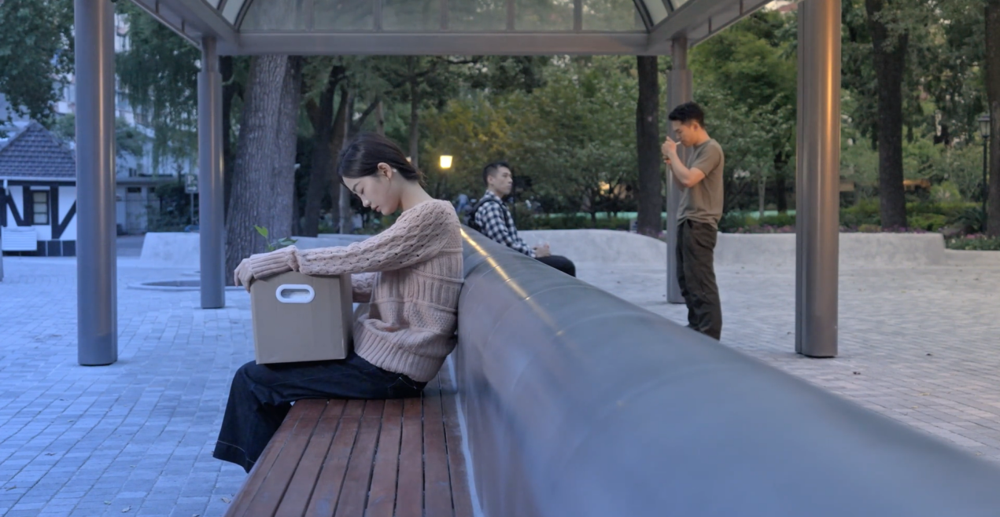
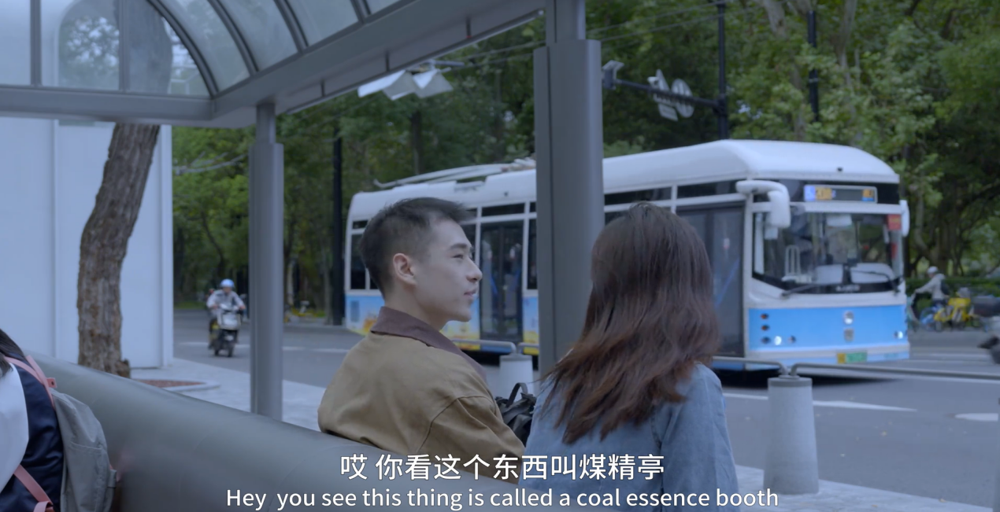
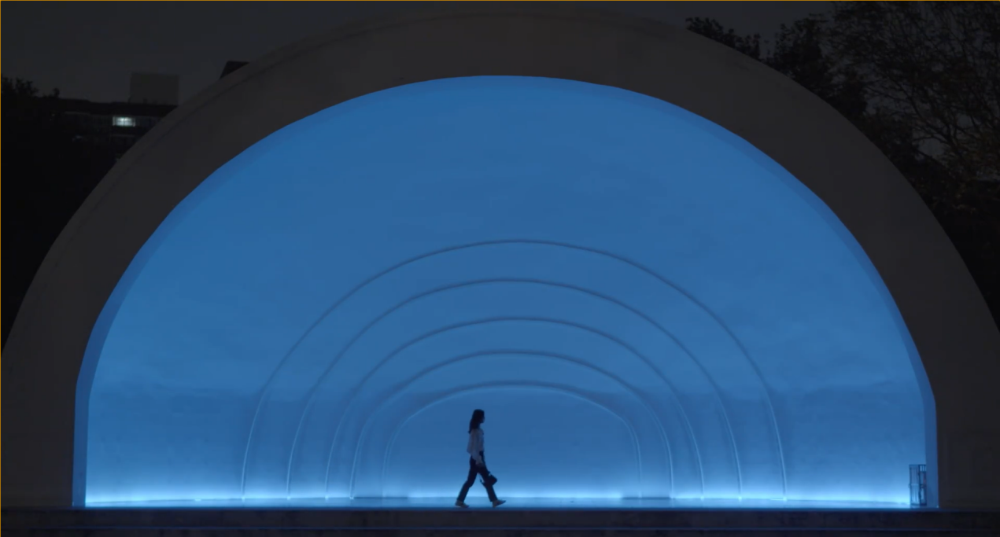

《万航渡路站》
类型：快节奏恋爱、城市孤独、爱情
一句话故事：一个公交站、两个游荡的普通人、五个工作日、一段从有到无的感情故事。



故事梗概
《万航渡路站》讲述了在上海一个普通公交车站万航渡路站，女生王安近和男生陈远在这一周上班等公交相遇的故事，一周的时间一段感情从有到无。两人因一次意外交换耳机相识，发现彼此都喜欢歌手伍佰的音乐，甚至去过同一场演唱会。
随着一次次短暂的早晨交谈，他们逐渐了解彼此的生活背景、家乡与理想——王安近渴望像挪威“索玛若依岛”那样没有时间束缚的自由生活，而陈远则更务实、现实。两人之间萌生微妙的情感联系，约定一起散步却被加班打断。第六天清晨，陈远在车站等了一夜醒来，看到王安近走来，却发现她只是来加班的。故事在都市快节奏与个体内心渴望之间，留下一种淡淡的遗憾与未完成的可能。
创作阐述
《万航渡路站》试图捕捉当代都市年轻人“身边式孤独”的情感状态。在快节奏的城市生活中，人与人之间的距离既近又远——物理空间高度重合，情感连接却难以建立。剧本通过公交车站这一日常却充满流动性的空间，呈现两个渴望真诚交流却又各自被生活节奏裹挟的年轻人。
《万航渡路站》的核心在于两位主人公——王安近与陈远。王安近的出场状态是“戴着耳机、昏昏欲睡”，身体不由自主地前后摇摆——这是一种都市年轻人常见的被动疲惫，也是她与周遭环境保持距离的方式。但她的醒不是被外界叫醒，而是当听到浪人情歌、发现陈远与她听同一首歌时，她主动追问“你也喜欢伍佰吗？”这一细节暗示：她的内心始终保留着一扇未关紧的门，门后是对真诚和自由的信仰。她对“索玛若依岛”的描述也是她对理想世界的描述——一个没有时间约束、没有人规定你该做什么的地方。然而，当陈远用“机票很贵吧”等现实逻辑回应时，她只轻轻说了一句“可能吧”，她知道理想与现实的裂缝，但她依然选择去试试。
陈远是一个务实、热心、但被节奏推着走的的现实主义者。他主动搭话、主动帮忙搬箱子、主动加微信，看似热情外向，但这种主动性常常带着用力过猛的笨拙——比如翻过椅子对视、冲电话喊“我帮她搬”。他的善意是真的，但他的世界是由时间、距离、价格搭建的。听到索玛若依岛，第一反应是“去那的机票应该很贵吧”。他不是冷漠，而是他的想象力被现实生活牢牢锚定。
最动人的一笔是第五天傍晚：他因加班爽约，凌晨跑到车站，空无一人，颓然睡去，第二天清晨醒来第一眼看到王安近，冲上去解释“昨天晚上真是对不起”，而王安近说“哦，不是，我今天加班”。他的歉意与她的淡然背后，是同一套都市节奏对人的同质化磨损。一个理想主义者一个现实主义者二人虽然通过相同爱好的点短暂相连但人格底色的不同让他们从最开始就无法靠近。
伍佰的音乐作为纽带，象征一种对真实、洒脱生活的向往，而“索玛若依岛”则成为理想自由的隐喻。故事最终没有走向浪漫的闭环，而是回归到现实的无奈与错位，表达一种“生活继续，但情感未竟”的真实质感。在拥挤的城市里，我们究竟能多近地靠近另一个人，又为何总是错过。